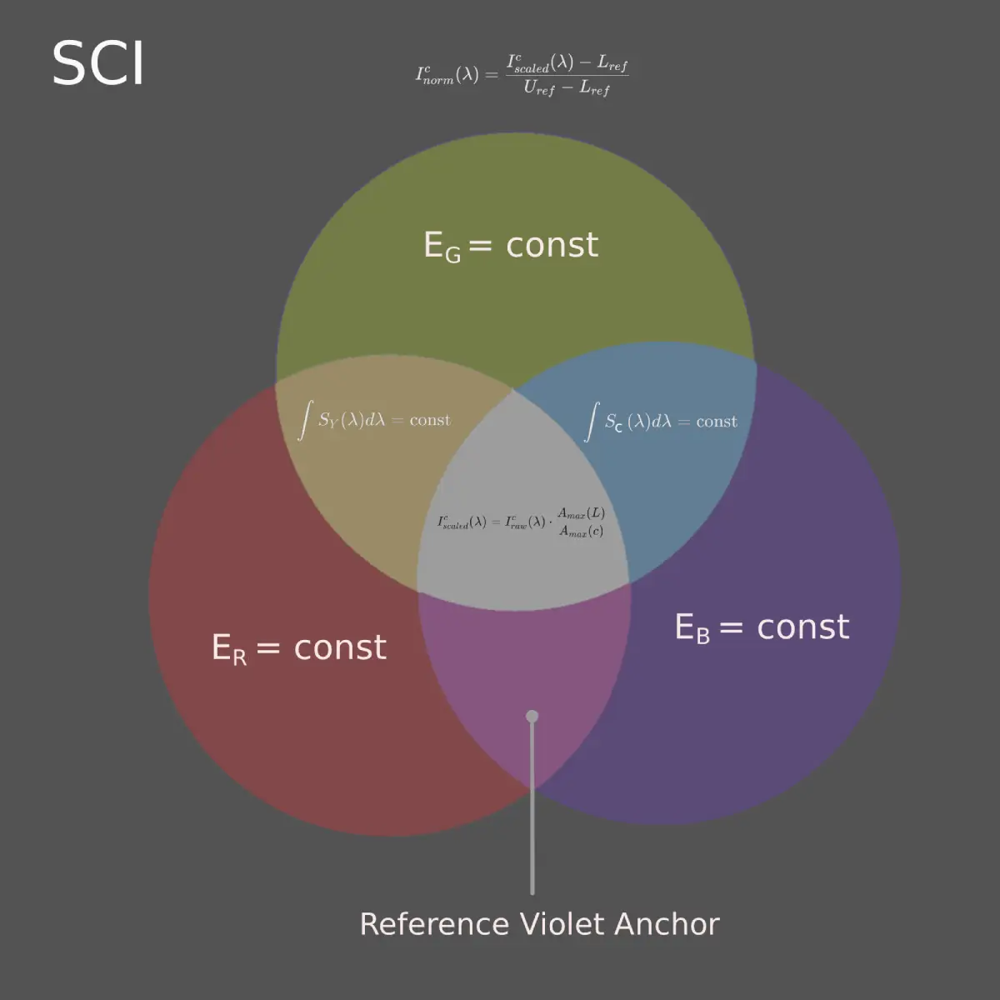
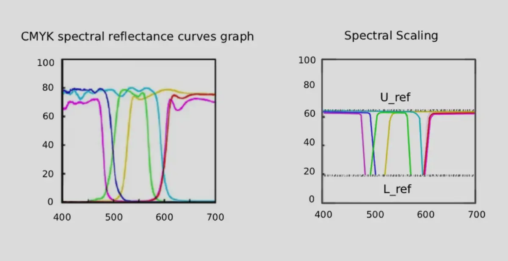
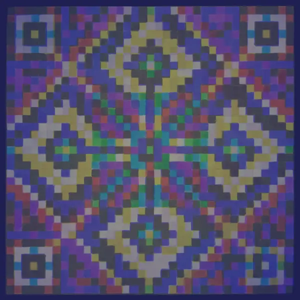

SPECTRAL CHANNEL INTEGRITY (SCI)
SPECTRAL CHANNEL INTEGRITY (SCI)
Детермінована нормалізація спектрального відгуку для систем комп'ютерного зору.
Deterministic spectral response normalization for computer vision systems.

Ресурс присвячений синхронізації кольору між випромінювальними (екрани), відбивальними (фарби) та реєструвальними (датчики) системами.
This resource is dedicated to color synchronization between emissive (screens), reflective (pigments), and registering (sensors) systems.
Субтрактивні пігменти мають широкі спектри поглинання, що перекриваються. При друці це викликає взаємний вплив каналів, який порушує вихідну структуру кольору — точні співвідношення інтенсивностей між RGB-каналами.
Subtractive pigments possess broad, overlapping absorption spectra. During printing, this causes inter-channel interference that disrupts the original color structure — the precise intensity ratios between RGB channels.
В результаті на відбитку спотворюється те, що в цифровому зображенні визначає кожен колір. Ця втрата структурної цілісності є особливо критичною при незалежному багатоканальному кодуванні даних, де точність пропорцій між каналами необхідна для надійного декодування.
As a result, what defines each color in a digital image becomes distorted on the print. This loss of structural integrity is especially critical in independent multi-channel data encoding, where precise proportions between channels are essential for reliable decoding.
Для вирішення цієї проблеми розроблено модель SCI (Spectral Channel Integrity). Вона усуває взаємний вплив каналів шляхом детермінованої нормалізації параметрів пігментного середовища, повертаючи їм операційну незалежність.
To address this problem, the SCI (Spectral Channel Integrity) model was developed. It eliminates the mutual influence of channels through deterministic normalization of the pigment medium parameters, restoring their operational independence.

ДЕТАЛЬНІШЕ: Обмеження перцепційного підходу та цілі SCI DETAILS: Limitations of the Perceptual Approach and SCI Goals
Класичний підхід Міжнародного консорціуму з кольору (ICC) спирається на колориметрію — підгонку координат під людське сприйняття. Для автоматизованих систем комп'ютерного зору такий підхід є неприйнятним з наступних причин:
The classic International Color Consortium (ICC) approach relies on colorimetry — adjusting coordinates to match human perception. For automated computer vision systems, this approach is unacceptable due to the following reasons:
- Втрата математичної строгості: Перцепційні профілі використовують інтерполяційні таблиці, що робить тракт кодування-декодування сигналів незворотним.
- Loss of mathematical rigor: Perceptual profiles utilize look-up tables (LUT), making the signal encoding-decoding path irreversible.
- Ефекти метамеризму: При зміні спектрального складу зовнішнього освітлення візуально «однакові» кольори кардинально змінюють фізичний профіль відбиття.
- Metabolism effects: When the spectral composition of ambient lighting changes, visually "identical" colors drastically alter their physical reflection profile.
- Руйнування багатошарових даних: Будь-яка спроба упакувати в один елемент кілька інформаційних шарів розбивається об нелінійне змішування пігментів.
- Destruction of multi-layered data: Any attempt to pack several information layers into a single element shatters against the non-linear blending of pigments.
Рішення SCI: Модель здійснює жорстке приведення спектрального відгуку пігментів до загальних фізичних меж, перетворюючи субтрактивне середовище на стабільний аналог аддитивної матриці.
The SCI Solution: The model strictly constrains the spectral response of pigments to shared physical boundaries, transforming the subtractive medium into a stable counterpart of an additive matrix.
2. Математична модель
2. Mathematical Model
Механізм спектрального лімітування
The Mechanism of Spectral Limitation
Якір системи — спектральний обмежувач. Як опорний компонент вибирається пігмент, що має найменший фізичний динамічний діапазон у наборі (в CMY-системах це зазвичай Magenta). Спектральні характеристики інших пігментів примусово масштабуються відносно фізичних меж цього обмежувача, формуючи єдині верхній \(U_{ref}\) і нижній \(L_{ref}\) опорні рівні.
The anchor of the system is the spectral limiter. A pigment possessing the smallest physical dynamic range in the set is selected as the reference component (typically Magenta in CMY systems). The spectral characteristics of the remaining pigments are forcefully scaled relative to the physical boundaries of this limiter, forming unified upper \(U_{ref}\) and lower \(L_{ref}\) reference levels.

ДЕТАЛЬНІШЕ: Математичний апарат масштабування DETAILS: Mathematical Apparatus of Scaling
Амплітудне масштабування
Amplitude Scaling
\(I_{raw}^{c}(\lambda)\) — вихідна інтенсивність відбиття пігменту на довжині хвилі \(\lambda\);initial reflection intensity of the pigment at wavelength \(\lambda\);
\(A_{max}(L)\) — максимальна фізична амплітуда обраного спектрального обмежувача;maximum physical amplitude of the selected spectral limiter;
\(A_{max}(c)\) — максимальна амплітуда розглянутого пігменту.maximum amplitude of the pigment under consideration.
Формування загальних опорних рівнів
Formation of Shared Reference Levels
\(S_{in}\) — значення вхідного сигналу після амплітудного вирівнювання;input signal value after amplitude alignment;
\(U_{ref}\) — загальний верхній референсний рівень системи;shared upper reference level of the system;
\(L_{ref}\) — загальний нижній референсний рівень системи.shared lower reference level of the system.
Межі застосовності моделі
Boundaries of Model Applicability
Модель не замінює традиційні методи кольоропередачі та не обмежує використання насичених кольорів у художній та дизайнерській практиці. Її завдання — формування відтворюваного спектрального середовища для додатків, у яких критично важливе збереження структури та операціональної незалежності RGB-каналів.
The model does not replace traditional color reproduction methods and does not restrict the use of saturated colors in artistic or design practices. Its goal is to form a reproducible spectral environment for applications where preserving the structure and operational independence of RGB channels is critical.
Області застосування:Fields of Application:
- комп'ютерний зір та системи штучного інтелекту;
- computer vision and artificial intelligence systems;
- прецизійне калібрування оптичних систем;
- high-precision calibration of optical systems;
- багатоканальне спектральне кодування даних.
- multi-channel spectral data encoding.
Подібно до того, як камертон не замінює музику, а служить еталоном налаштування, SCI не підміняє існуючі колірні простори, а надає інструмент для завдань, що вимагають детермінованого розділення інформаційних каналів.
Just as a tuning fork does not replace music but serves as a tuning standard, SCI does not displace existing color spaces but provides a tool for tasks requiring deterministic separation of information channels.
3. Практичне застосування в комп'ютерному зорі
3. Practical Application in Computer Vision
Ідея збільшити ємність QR-кодів за рахунок використання колірних каналів (RGB) не нова. Але при звичайному друці у форматі CMYK інформація в каналах втрачається через перехресні спотворення (Crosstalk), і вирішити цю проблему алгоритмами декодування практично неможливо. Модель SCI формує фізично стійку структуру колірних каналів, адаптовану під особливості друку, що виключає втрату даних. Вона дозволяє системі комп'ютерного зору чітко бачити та диференціювати кожен колірний канал окремо, що кратно підвищує точність розпізнавання кодів у реальних умовах.
The idea to increase QR code capacity by utilizing color channels (RGB) is not new. However, with standard CMYK printing, channel information is lost due to cross-talk distortions, making it practically impossible to solve via decoding algorithms. The SCI model forms a physically stable structure of color channels adapted to printing specifics, which completely eliminates data loss. It allows a computer vision system to clearly see and differentiate each color channel individually, multiplying code recognition accuracy in real-world conditions.

Spectrum QR Generator (3-in-1)
Паралельна упаковка трьох незалежних масивів даних в один фізичний QR-код із розділенням за RGB-каналами.
Parallel packaging of three independent data arrays into a single physical QR code with separation into RGB channels.

QRnament Creator
Алгоритм безшовного впровадження матричних структур даних в орнаментальні композиції та патерни.
An algorithm for seamlessly embedding matrix data structures into ornamental compositions and patterns.
Зверніть увагу:Please note:
представлені веб-генератори формують зображення в цифровому вигляді, без адаптації до друку. У вихідному цифровому вигляді ці структури гарантовано декодуються програмним забезпеченням тільки при зчитуванні безпосередньо з екрана вашого монітора.
Для коректного перенесення на фізичний носій (папір, пластик або полотно) параметри генерованого файлу повинні пройти попередню підготовку до друку згідно з алгоритмами SCI.
the presented web generators generate images in digital form, without print adaptation. In their raw digital form, these structures are guaranteed to be decoded by software only when read directly from your monitor screen.
For correct transfer to a physical medium (paper, plastic, or canvas), the parameters of the generated file must undergo preliminary print preparation according to SCI algorithms.
Підрозділ: Практичне випробування
Subsection: Practical Testing
Експеримент із нанесенням багатошарового колірного коду та орнаменту акриловими пігментами на полотно за принципами моделі SCI. Отримані результати демонструють принципову можливість декодування багатошарових структур, сформованих на фізичному носії. Експеримент має попередній характер і потребує подальшої оптимізації алгоритмів кодування та зчитування.
An experiment involving the application of a multi-layer color code and ornament using acrylic pigments onto canvas according to SCI model principles. The obtained results demonstrate the fundamental possibility of decoding multi-layer structures formed on a physical medium. The experiment is preliminary and requires further optimization of encoding and reading algorithms.


4. Апаратне калібрування
4. Hardware Calibration
Апаратне калібрування SCI засноване на використанні еталонної тестової матриці та набору вузькосмугових RGB-фільтрів (R ≈ 615 нм, G ≈ 535 нм, B ≈ 450 нм). Вихідний цифровий файл виводиться на друк, після чого оцінюється ступінь розділення каналів через відповідні фільтри. Оскільки характеристики принтера, пігментів та носія відрізняються, колірні параметри еталонного файлу підлаштовуються доти, доки на відбитку не буде досягнуто стійкої спектральної сепарації з мінімальною міжканальною інтерференцією (Crosstalk).
SCI hardware calibration is based on using a reference test matrix and a set of narrow-band RGB filters (R ≈ 615 nm, G ≈ 535 nm, B ≈ 450 nm). The initial digital file is printed, after which the degree of channel separation through the corresponding filters is evaluated. Since the characteristics of the printer, pigments, and medium vary, the color parameters of the reference file are adjusted until a stable spectral separation with minimal inter-channel interference (Crosstalk) is achieved on the print.
Отриманий файл стає еталоном для даної друкованої системи і надалі не змінюється. На наступному етапі з його допомогою калібрується вже сам пристрій відображення. Спостерігаючи зображення на екрані через ті самі фільтри, коригують апаратні параметри монітора до досягнення такого ж розділення каналів, як на фізичному відбитку.
The resulting file becomes the benchmark for the given printing system and remains unaltered. In the next step, it is used to calibrate the display device itself. By observing the screen image through the same filters, the monitor's hardware parameters are adjusted to achieve the same channel separation as on the physical print.
В результаті монітор і друкована система виявляються синхронізованими відносно одного й того самого спектрального еталона. Зображення на екрані відображається в межах, що реально відтворюються конкретним друкарським обладнанням, що забезпечує відтворюваність структури RGB-сигналу при переході між аддитивним та субтрактивним середовищем.
As a result, the monitor and the printing system are synchronized relative to the exact same spectral reference. The screen image is displayed within the boundaries actually reproducible by the specific printing equipment, ensuring the reproducibility of the RGB signal structure during transitions between additive and subtractive media.
5. Статус проєкту
5. Project Status
Модель SCI перебуває у стадії активного розвитку, формування теоретичної бази та проведення практичних експериментів.
The SCI model is in a stage of active development, building its theoretical framework and conducting practical experiments.
Для масштабування проєкту необхідні:
To scale the project, the following are required:
- Тести на професійному друкарському обладнанні.
- Testing on professional printing equipment.
- Дослідження з використанням спектрометра — для точної оцінки того, як алгоритми комп'ютерного зору взаємодіють із кольором у різних умовах.
- Spectrometer-backed research — to precisely evaluate how computer vision algorithms interact with color under varying conditions.
Проєкт є відкритим і запрошує до співпраці фахівців у галузі поліграфії, колориметрії та Computer Vision, а також програмістів, спонсорів та всіх, кому цікавий цей напрям.
The project is open source and invites collaboration from specialists in printing, colorimetry, and Computer Vision, as well as programmers, sponsors, and everyone interested in this field.
6. Про автора
6. About the Author
Михайло Кашкаров
Mikhail Kashkarov
Science art художник
Science art artist
7. Контакти та публікації
7. Contacts and Publications
Publication Repository
@Bakminsterfuler
@Astra31415926
Michael-RGB-ART
FB Profile
@MihailKashkarov
Михайло Кашкаров
@MichaelKashkarov